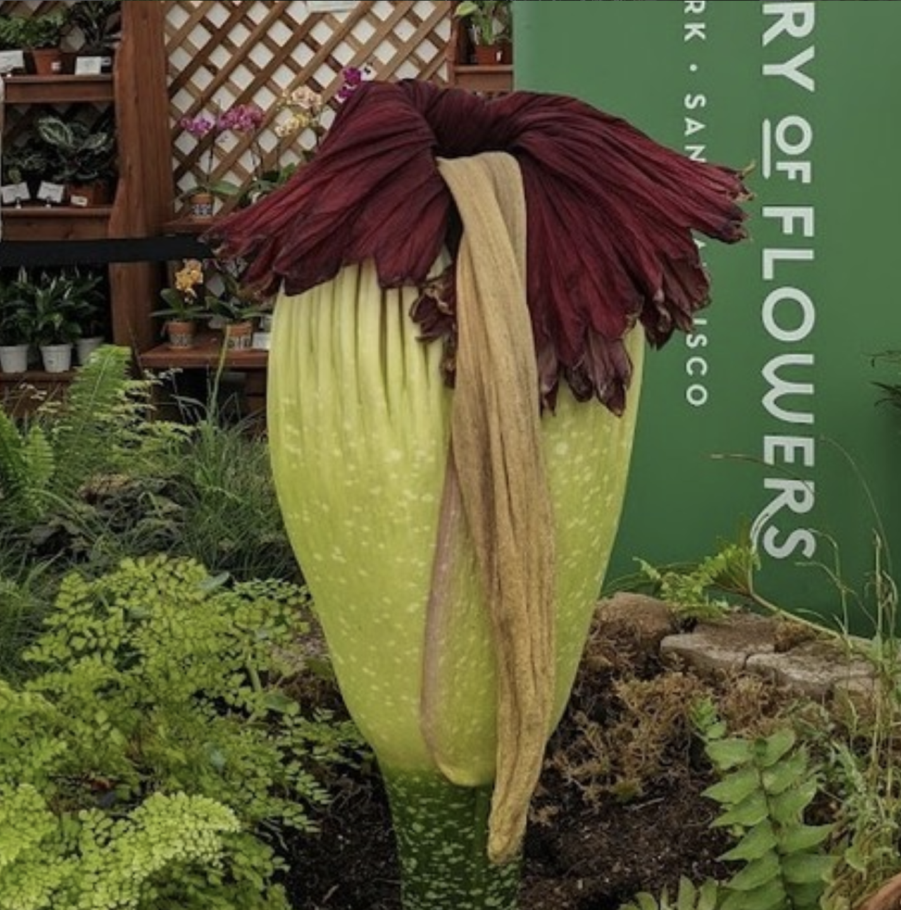
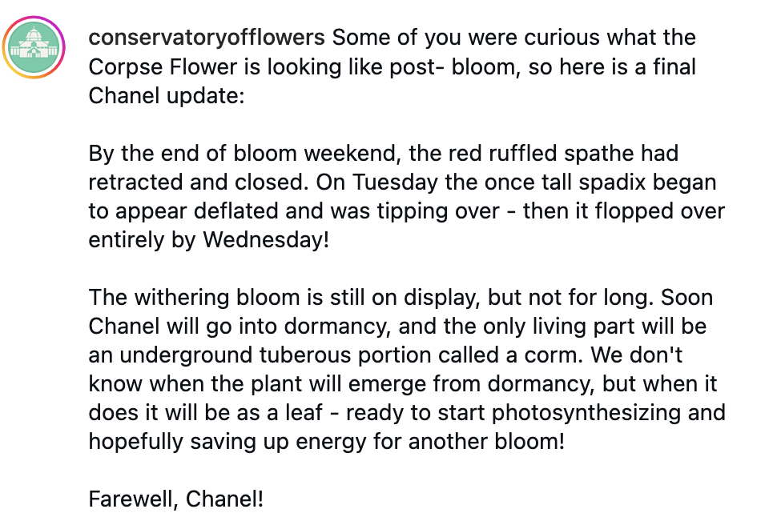

Corpse Flower Bloom Campaign
Online and in-person visitor engagement aimed to go beyond the plant's infamous stench, and share stories about Amorphophallus titanum's curious life cycle, pollination strategy, and conservation challenges.



